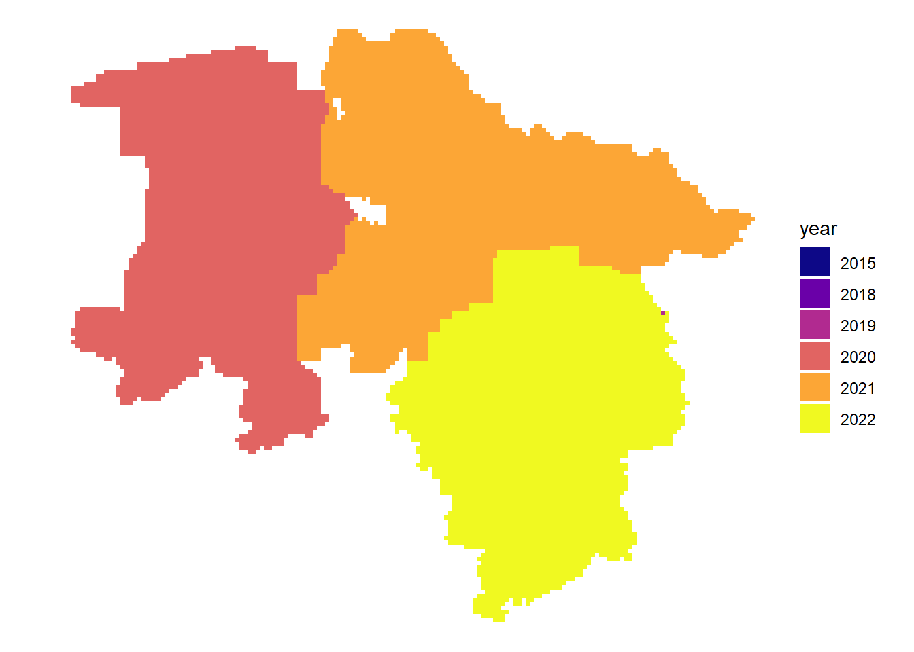
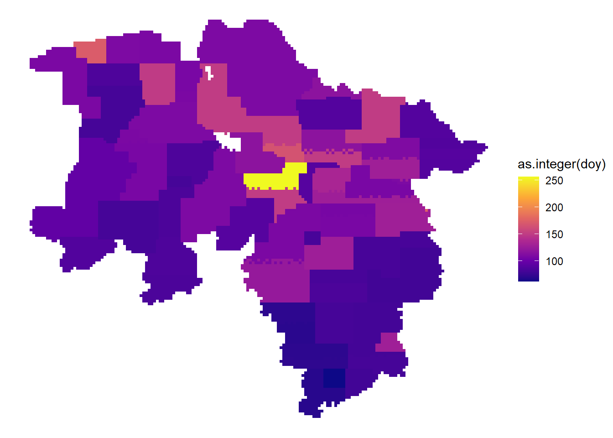
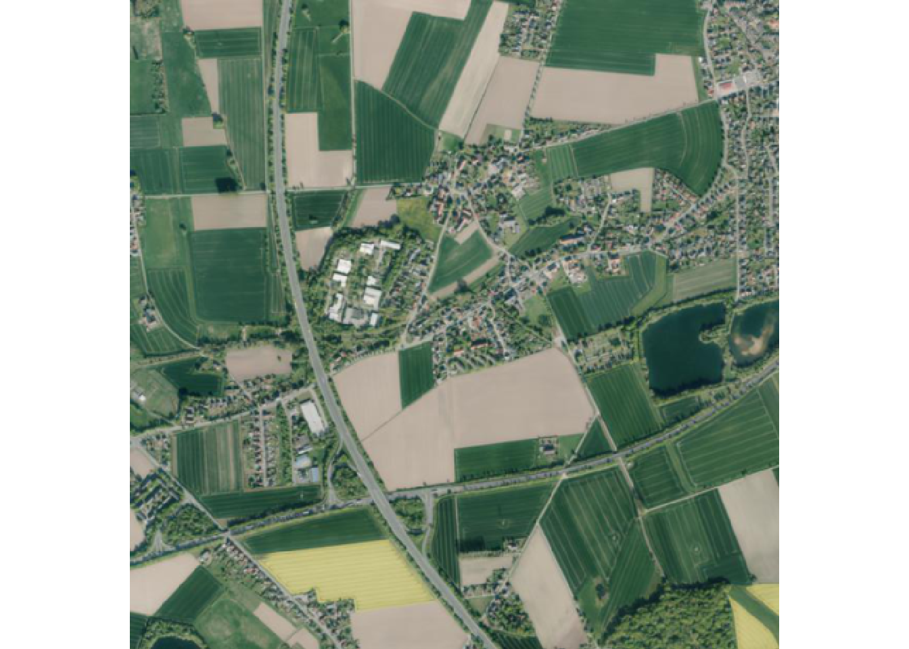

renv::restore()
library(here)
library(dplyr)
library(ggplot2)
library(sf)
library(terra)
library(vapour)Working with Orthoimagery
Load necessary libraries
Let’s load some basic libraries to work with the data
Initialize metadata catalog
The data catalog is basically a geojson file which is stored in a cloud bucket. It consists of many polygons which cover cover Lower Saxony and represent image tiles (2x2 km). For each tile it contains some basic metadata and links to further metadata of the images and links to the image data itself.
Let’s load the data in R.
dat <- sf::st_read("https://single-datasets.opengeodata.lgln.niedersachsen.de/pro-download-indices/dop/lgln-opengeodata-dop20.geojson")Reading layer `lgln-opengeodata-dop20' from data source
`https://single-datasets.opengeodata.lgln.niedersachsen.de/pro-download-indices/dop/lgln-opengeodata-dop20.geojson'
using driver `GeoJSON'
Simple feature collection with 21763 features and 6 fields
Geometry type: POLYGON
Dimension: XY
Bounding box: xmin: 342000 ymin: 5682000 xmax: 676000 ymax: 5972000
Projected CRS: ETRS89 / UTM zone 32Nand print the first object (tile) to get an ideas of the data.
print(dat[1,])Simple feature collection with 1 feature and 6 fields
Geometry type: POLYGON
Dimension: XY
Bounding box: xmin: 342000 ymin: 5940000 xmax: 344000 ymax: 5942000
Projected CRS: ETRS89 / UTM zone 32N
Aktualitaet
1 2020-04-18
rgb
1 https://dop20-rgb.opengeodata.lgln.niedersachsen.de/323425940/2020-04-18/dop20rgb_32_342_5940_2_ni_2020-04-18.tif
rgb_metadata
1 https://dop20-rgb.opengeodata.lgln.niedersachsen.de/323425940/2020-04-18/dop20rgb_32_342_5940_2_ni_2020-04-18.xml
rgbi
1 https://dop20-rgbi.opengeodata.lgln.niedersachsen.de/323425940/2020-04-18/dop20rgbi_32_342_5940_2_ni_2020-04-18.tif
rgbi_metadata
1 https://dop20-rgbi.opengeodata.lgln.niedersachsen.de/323425940/2020-04-18/dop20rgbi_32_342_5940_2_ni_2020-04-18.xml
tile_id geometry
1 323425940 POLYGON ((342000 5940000, 3...we can optionally preprocess the data, here we change the date format
dat$date <- format(as.Date(as.character(dat$Aktualitaet), format = "%Y-%m-%d"), format= "%Y%m%d")
dat$year <- format(as.Date(as.character(dat$Aktualitaet), format = "%Y-%m-%d"), format= "%Y")
dat$month_day <- format(as.Date(as.character(dat$Aktualitaet), format = "%Y-%m-%d"), format= "%m%d")
dat$doy <- format(as.Date(as.character(dat$Aktualitaet), format = "%Y-%m-%d"), format= "%j")Plot metadata catalog
As we have seen above, the data catalog contains information about the acquisition date of images. We can plot this data to get more information about the available images.
Latest acquisition date per tile
dat |>
arrange(date) |>
ggplot() +
geom_sf( aes(fill = year), color = NA) +
theme_void() +
scale_fill_viridis_d(option = "plasma")
Acquisition date within the years
dat |>
arrange(date) |>
ggplot() +
geom_sf( aes(fill = as.integer(doy)), color = NA) +
theme_void() +
scale_fill_viridis_c(option = "plasma")
# interactive mapping
# dat |>
# arrange(date) |>
# mapview::mapview(zcol="doy")
Plot image data
Finally we can also query the image data itself. As we have seen above the data catalog contains links to the images. For each tile there is two different image versions per date: rgb-images are 3-band images compressed as jpeg and primarily meant to display; rgbi-images are lossless compressed and contain the NIR-channel, they can be used for analytical work. The images are stored in a cloud bucket as Cloud Optimized Geotiffs (COG), this means that the image data contains image overviews and is structured internally in such a way that it is possible to stream only the required image data. This makes it quite efficient and comfortable to work with the image data.
Latest image
Here we sort the metadata catalog in descending order by acquisition date and get the first rgb-image link. We then load and plot the data.
fileadress =
dat |>
arrange(desc(date)) |>
slice(1) |>
pull(rgb)
cog.url <- paste0("/vsicurl/", fileadress)
ras <- terra::rast(cog.url)
terra::plotRGB(ras)
First image
Here we sort the metadata catalog in ascending order by acquisition date and get the first rgbi-image link. We then load and plot the data as false color composite.
fileadress =
dat |>
arrange(date) |>
slice(1) |>
pull(rgbi)
cog.url <- paste0("/vsicurl/", fileadress)
ras <- terra::rast(cog.url)
terra::plotRGB(ras, r=4,g=3,b=2)
Multi-temporal
As mentioned before we can access just the data we need from COGs, this means we can query a certain extent or query the image with certain dimensions. In the examples above we plotted the overview, but in order to access the raw data we need some function in R. We create this function here with the vapor package which is able to warp the underlying raw data.
get_img <- function(img, dim = c(500,500)){
fileadress <- img |>
pull(rgb)
cog.url <- file.path("/vsicurl", fileadress)
info <- vapour::vapour_raster_info(cog.url)
roi <- info$extent
prj <- info$projection
dim <- dim
vals <- vapour::vapour_warp_raster(cog.url, extent = roi, dimension = dim, projection = prj
, bands = c(1,2,3)
, band_output_type = "Int32"
, resample = "Bilinear")
ras <- terra::rast(terra::ext(roi), ncols = dim[1], nrows = dim[2], vals = array(unlist(vals), c(dim, 3)), nlyrs = 3, crs = prj)
return(ras)
}Lets get all images for a certain tile and print the acquisition dates.
multitemporal <- dat |>
filter(tile_id == "324965790")
multitemporal$Aktualitaet[1] "2019-04-07" "2022-05-03"First image in tile
Now lets query and print the first image for this tile.
img1 <- multitemporal |>
slice_min(order_by = date) |>
get_img()
terra::plotRGB(img1)
Last image in tile
And the last image for this tile.
img2 <- multitemporal |>
slice_max(order_by = date) |>
get_img()
terra::plotRGB(img2)
Warning
Until now you will get a warning Range downloading not supported by this server! when trying to use range requests for RGBI data!